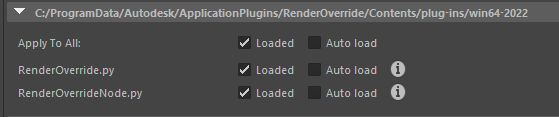
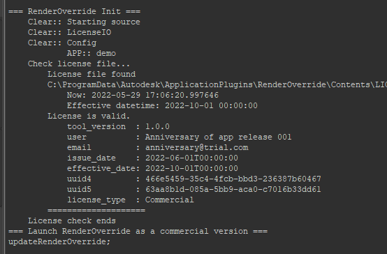
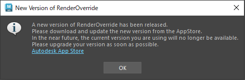
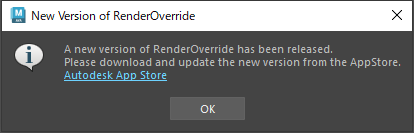

プラグインのロード¶
このページの目次:
Maya®を起動する前に、プラグインのインストールを完了させてください
(ダウンロード方法)
インストールができたら、Maya®を起動します
プラグインのロード方法¶
Plug-in Manager を立ち上げます (
Windows > Settings/Preferences > Plug-in Manager)Plug-in Managerのダイアログの
RenderOverride.pyとRenderOverrideNode.pyの Loaded もしくは Auto load にチェックを入れます
ライセンス認証¶
プラグインのロード時に、ライセンス認証が行われます
Warning
Trial版のページからダウンロードされたソフトウェアは、有償版のライセンスを支払っていても、ライセンス認証されずに試用版として起動されます。
有償版のライセンスを支払った場合は、Trial版をアンインストールし、有償版のソフトウェアをダウンロード・インストールしてください。
ScriptEditorに認証の履歴が出力されます
(有償版のライセンスが有効な場合、図のような履歴が表示されます)¶
ライセンス認証時に、次のようなダイアログが表示された場合は、新しいバージョンにアップデートをお願いします。
新しい機能の追加と安定性の増したバージョンをお使いいただけるよう、このようなダイアログが表示されます。
また、セキュリティ上の問題回避のために、定期的にアップデートをお願いしております。
(この表示が出た場合、1か月以内にアップデートをお願いします)¶
(この表示が出た場合は、すぐにアップデートをお願いします。商用利用できなくなり、ウォーターマークが表示されます)¶
Note
ライセンスのトラブルが発生した時は「 バグ報告・新機能の提案など 」からご報告をお願いします。
その際、ScriptEditorのスナップショットを添付していただけると、対応しやすくなります。